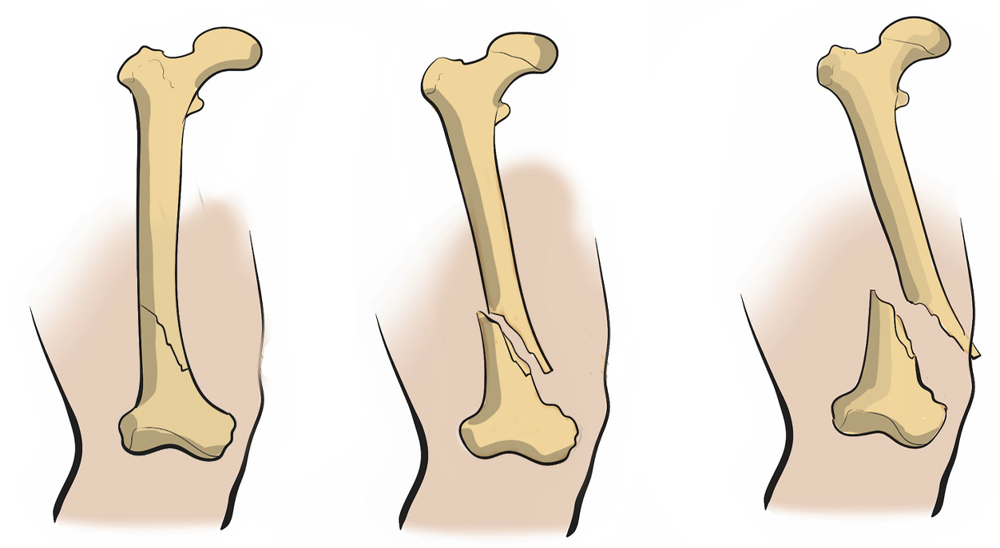

Fracture
A fracture is a crack or break of a bone. When a fracture is open, it is called a compound fracture, and when it is closed it is called a simple fracture, which can be either a displaced or non-displaced fracture, as shown in Figure 2.5. The symptoms of a fracture may differ depending on its type and location. However, the common symptoms include, pain, swelling, bruise or discoloration of the skin around the fracture site, deformity or an abnormal appearance of the injured limb or area, limited range of motion, tenderness, numbness or tingling, crepitus, shock and disorientation.

Exercise 2.1
Strain
It is a stretch or tearing of muscle or tendon caused by excessive tension. A strain occurs at the junction of the muscle or tendon that connects muscle to the bone, as shown in Figure 2.6. Hamstring and quadriceps are muscles which are highly affected due to the excessive force upon them. The signs and symptoms of strain can vary in severity depending on the extent of the injury, but common signs and symptoms include, pain, swelling, tenderness, stiffness, instability and decreased function.
SPORTS STUDIES FORM ONE.indd 16
05/12/2024 13:17:33